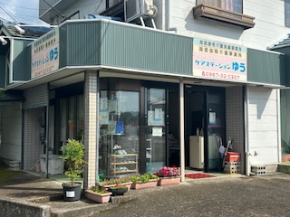

令和８年５月３０日
今日の阿蘇山は最高のご褒美でした！
今日は担当者会議の帰りに、素晴らしい五月晴れ！根子岳・高岳もくっきりときれいに微笑んでくれています。
続きを読む →

令和８年５月２９日
私たちの事務所を紹介します！
こんにちは、ケアステーションゆうです。今回は、私たちが毎日働いている事務所をご紹介します！
続きを読む →

令和８年５月２８日
はじめまして！「ケアステーションゆう」です。ブログ始めました！
内牧にある「ケアステーションゆう」です。このたびホームページが完成し、スタッフの日常や事業所の雰囲気をお伝えする「スタッフ日記」もスタートします。どうぞよろしくお願いいたします！
続きを読む →
2024年11月28日
阿蘇に初雪が降りました ❄️
今朝出勤すると、外輪山がうっすら白くなっていました。今年もそんな季節が来たんだなあと、しばらく窓の外を眺めていました。スタッフみんなで「今年の冬は早いね」と話しながら…
続きを読む →
2024年11月15日
事業所の庭に菊が咲きました 🌼
スタッフが丹精込めて育てた菊が、今年も綺麗に咲きました。白や黄色、ピンクと色とりどりで、ご利用者さまにも喜んでいただけました。
続きを読む →
2024年11月2日
秋の阿蘇、草千里の紅葉 🍂
休日に草千里を散歩してきました。すすきが一面に広がって、阿蘇らしい秋の景色でした。こんな大自然の近くで働けることが、本当に幸せだなと改めて感じました。
続きを読む →